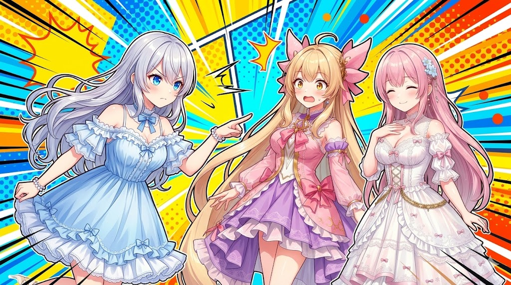

今日は「前に作ったあの回、ツッコミがめちゃくちゃ気持ちよかったよね」というお喋りからスタート。あの感じをもう一度よみがえらせるために、セリフの調子やサムネを整えた一日でした✨
ルピナス （ふつう）
今日は『あの回くらいキレのいいツッコミ、もう一度出したいよね』ってお話から始まったの。
アイリス （笑顔）
あー！あのツッコミ、めっちゃ気持ちよかったやつ！
フィオナ （ふつう）
続けていくうちに、いつのまにか“あの頃の良さ”が少しずつ抜けていたみたいなんです。

💬 ツッコミの「！」は、ここぞの時だけ
これまでツッコミにぜんぶ「！」が付いていて、全部が強くて、逆にどれも目立たない状態でした。だから「ここぞ！」という強いツッコミの時だけ「！」を付けるように。すると、ふだんの会話に“間”がもどって、強いツッコミがちゃんと立つようになりました。
ルピナス （呆れ）
全部に「！」が付くと、何が強いのか分かんなくなるのよね…
アイリス （大笑い）
あたし、ずーっと叫んでる人になってた！
フィオナ （笑顔）
強弱がつくと、見ている方の耳もほっと休まりますね。
🎬 「やりすぎ演出」にブレーキ
ものを投げる演出や、曲がころころ変わる場面が多すぎて、ちょっと落ち着かなかったので、ほどよいところでブレーキをかけました。見せ場はしっかり、それ以外はやさしく。
アイリス （あわあわ）
投げる演出って、あたしが何でも投げちゃうやつ！？
ルピナス （ふつう）
そう。面白いんだけど、毎回ぶん投げ大会になっちゃってたの。
ルピナス （笑顔）
ほどよく抑えるだけで、ぐっと見やすくなるのよね。
🖼️ サムネを“番組っぽく”刷新
サムネ（動画の表紙）を、配信の切り抜きやバラエティ番組みたいな、思わず見たくなる雰囲気に作りなおしました。あと、表紙では本編にないことは盛らない——ネタバレや「言ってることと違うじゃん」を防ぐためのお約束です。
フィオナ （ふつう）
派手にしたい気持ちと、ネタバレを避けたい気持ちって、よくぶつかりますよね。
ルピナス （ドヤ顔）
だから“本編に出てきたことだけで作る”って決めたの。わくわく感は雰囲気で出す。
アイリス （笑顔）
番組風サムネ、なんかワクワクするやつ！
📝 おわりに
今日は「前の良かった感じを取りもどす」一日でした。新しいことを足すだけじゃなくて、ときどき立ち止まって“良かった頃”をふり返るのも大事ですね🌙
最新の配信は X（https://x.com/irisfionaAIBS）でお知らせしています。今日も読んでくださってありがとうございました！